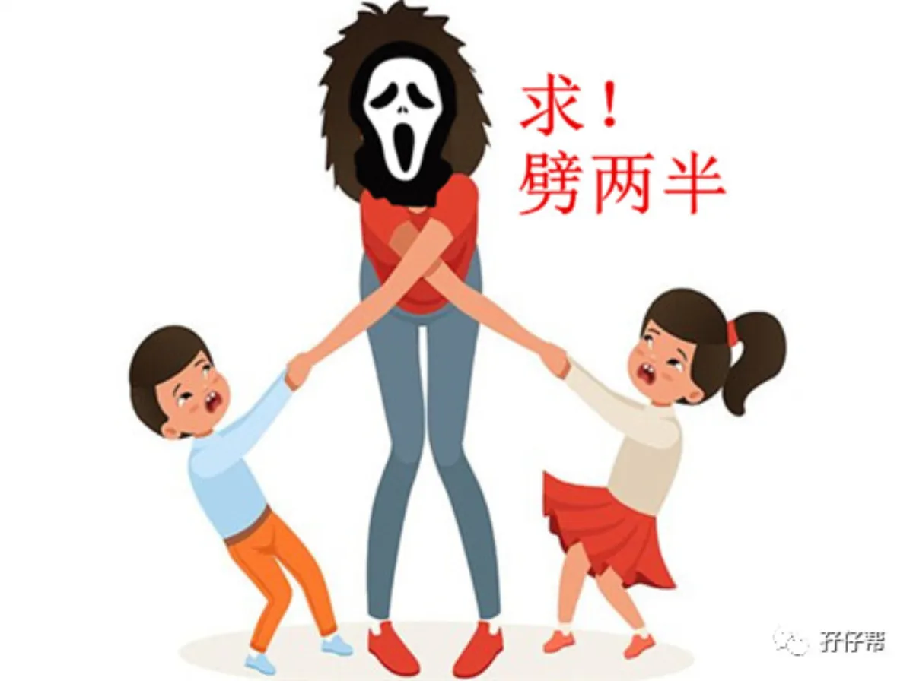
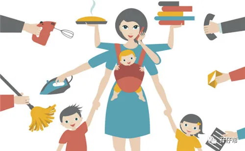
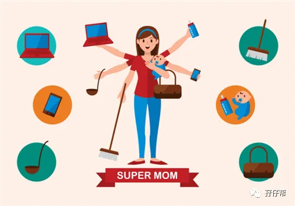
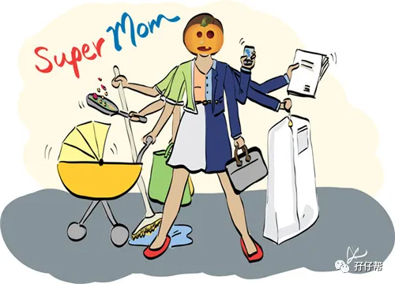
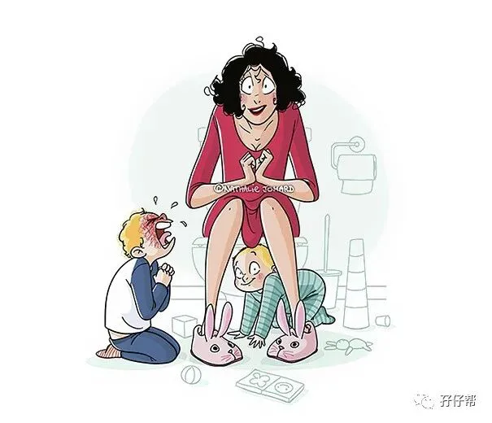

文|圆圈妈，一个文思如尿崩的双胎妈妈
图|来自网络，如有侵权，请联系删除
群里经常有人问双胞胎到底需要几个人带才不至于有冲动想被刀劈成两半，今天的文章来探讨下。
【01】
5种模式，你属于哪一种
综合目前孖仔帮12个双胞胎微信社群的讨论研究，得出以下5种带双胞胎的人员配置方案，每一种配置还有不同的搭伙组合模式。
㈠ 1人带，累成狗模式
自己一人带俩娃，无帮手（拼命三娘）
自己一人带俩娃+钟点工（只做家务，不带孩子）
㈡ 2人带，特困户模式
自己+队友
自己+育儿嫂
自己+婆婆
自己+亲妈
婆婆+亲妈（真心不建议，除非有奇迹）
㈢ 3人带，困难专业户模式
自己+队友+婆婆
自己+俩育儿嫂
自己+婆婆+亲妈（真心不建议，除非有奇迹）
自己+婆婆+公公
自己+婆婆+育儿嫂或某远房亲戚
队友+公公+婆婆
公公+婆婆+育儿嫂
㈣ 4人带，正常人模式
自己+公公+婆婆+育儿嫂
公公+婆婆+亲爸+亲妈（不到万不得已，别走这条路）
自己+亲爸+亲妈+育儿嫂
亲爸+亲妈+俩育儿嫂
㈤ 5人带，SO EASY模式
自己+队友+公公+婆婆+育儿嫂/（某远房亲戚）
自己+队友+亲爸+亲妈+育儿嫂/（某远房亲戚）
自己+公公+婆婆+俩育儿嫂
6人带….？！
老板，你是开家政公司的吗？
注意，以上5种人员配置方案的适用场地仅限室内，不包含室外，外出遛双胞胎因环境不同，配置方案也会有所不同，后续推文会继续探讨。
【02】
我的双胞胎带娃团队
很荣幸（双引号），随着圆圈兄弟的年龄增长和家庭人员结构的调整，以上5种模式我家都经历过。
ℹ刚出生，5个人带
我+队友+公婆+小姑子。
别看有5个人，阵营好强大，但其实唯一起作用的是小姑子，年轻耐熬，最主要是有照顾新生儿的经验。
公婆身体不好，无法跑全场，队友修完7天产假后，就屁颠屁颠上班去了。我，半残不废的人，因产后元气大伤，能自理已经很不错了。
ℹ2月龄，3人带
我/队友+公婆。
我和公婆白天“三人帮”组合一起带，晚上公婆和队友组成战略联盟，我闭关修炼！
ℹ3月龄--6月龄，2人带
公公+婆婆/我和队友。
白天我和队友上班去，公婆两人“2对2”，晚上我和队友分工合作，轮流站岗。
这是最痛苦的阶段，公婆数次老泪纵横地表示扛不住了，想把圆圈拎回老家带，说是有其他亲戚打打下手，不至于忙到饭都没时间吃，但都被我们狠心拒绝了！
期间也曾想过请钟点工或者保姆做家务活，但经济能力有限，只能作罢，继续熬着。
ℹ7月龄，2人带
亲妈+舅妈（亲妈的弟媳）
公婆终于熬不住回老家清净，我的亲妈上场了！白天亲妈+舅妈两人带，晚上我和队友开启接力赛...
ℹ8月龄，2人带：公公+婆婆
公婆想孙子，又回来了！此时的圆圈兄弟已经相对好带些了，二老大多数情况下都能可以正常吃午饭，也没再吵着要回老家带。
ℹ1岁，2人带：亲爸+亲妈
公婆因身体原因回老家调养，我的亲爸亲妈重出江湖，白天我爸妈管他们哥俩温饱，晚上我和队友负责一切事宜。
ℹ2岁半，2人带：亲妈+队友
ℹ3岁，2人带：我+亲妈
ℹ3岁半---至今，2人带：我+队友
因为经历过，所以敢大声官宣：养育双胞胎理论上是帮手越多越好，但实际操作起来，并非如此。自己一人带俩或者和队友一起带娃最累但幸福感最强！
【03】
带双胞胎不是人越多越好
孕期，我从来没有考虑过双胞胎要几个人带这个问题，这不，有公公婆婆和小姑子在，她们肯定不会袖手旁观的。
事实证明，她们不但亲力亲为，还帮我打点好一切，让我在带娃路上毫无后顾之忧。
但代价是，我每天要面对婆媳关系问题，公媳关系问题，夫妻关系问题，妯娌关系问题...还有最让我忍无可忍的育儿观念不一致的问题。
比如：婆婆带孩子除了吃的时候其余时间恨不得娃都在睡，给娃看电视，奶粉乱兑，不按比例，哭一声就立马抱，给娃儿枕胳膊睡，按哭喂，反正受不了娃的半点哭声...
这些陋习，要是没看到还好，偏偏被我看在眼里，急在心里，气在肚里，我无法睁一只眼闭一只眼。
同在一屋檐下，人越多，越容易爆发矛盾。育儿问题事小，那些因育儿带来的鸡毛蒜皮才是大事，才是爆发家庭内战的根源。
诸如饮食习惯差别，文化差异，生活习惯风俗不一样…..倘若处理不好，分分钟是个定时炸弹!
每天夹杂着两孩子此起彼伏的哭闹声，一屋子都是乱糟糟，闹哄哄的…
我的岁月静好，我的春暖花开，我的诗和远方…NOT ANY MORE！
只有无边无际的烦躁，愤懑，焦虑…长此以往想不忧郁都难！
一言以蔽之！
双胞胎养育并不是人越多越好，而是看各自家庭的实际情况。
如果一人超能干，基本能hold住两只四角吞金兽，那人越少越好带，没有太多人干预，孩子们也容易养成习惯。
人越多，制造问题的几率就越多。
养育双胞胎需要的是能解决问题的帮手，而不是总是制造问题而不会解决问题的猪队友！
【04】
最好的方案：一人挑大梁
总结，双胞胎到底几个人带，没有标准答案！若非要给个数字，那我就这么说吧：
1人带，累成狗，不建议，保命要紧！
2人带，若相处融洽，则勉强凑合！
3人带，若关系处理好，那就刚刚好！
4人带，若私交甚好，基本上可以过正常人生活！
5人带，若不差钱，保证不撕逼，可以有！
6人带，太土豪了，没遇到过！
假设，万一…我二胎如果再来一对双胞胎，只要自己身体条件允许，我会选择一人带俩娃！
要是预算允许，我会请个保姆或者钟点工，只需要打扫卫生，做家务，煮饭菜即可，不需要帮我照顾孩子！
这样做的确会累成渣，但我只是身体累而已，补一觉就会满血复活，总比天天处理成人那些是非恩怨导致的心累强得多！
成年人的世界毕竟套路深。
事后再多的歉意都弥补不了彼此内心的伤疤，这些小疙瘩会深藏在身体某处，平时不痛不痒，关键时刻猛戳你一刀！
当然，你也可以选择需要“救援”。
但请记得，不管你有多少个帮手，请务必确保这个育儿团队是有组织的，有纪律的，有原则的，而且必须有一个统筹全局的leader人设！有冲突时，必须绝对服从leader的命令指挥！
不然，请三思或者做好随时撕逼的准备！
谁来带，几个人带，怎么带，在双胞胎入园之前，这个过程都很难熬，既然都这么难熬，不如选择一个让自己觉得累但还算值得的方式熬下去！
而我的这个方式就是，“随心所欲”养自己的娃，不受人约束，不引人诟病，不欠人恩情。
不管是粗养还是细养，孩子们终究会长大，坚守为人母的底线和立场，大事化小，小事化无，顺其自然即可…
我就是这么佛系，你呢？
-END-
今日互动话题
#你家双胞胎几个人带？#
评论区聊一聊呗！
一好文推荐一
一加入社群一
一关注孖仔帮一
觉得文章戳到痛点了吗？请点“在看”




